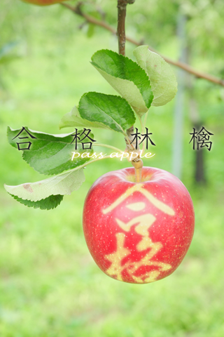

合格林檎とは？
What is 合格林檎 (PassApple)?
受験のげんかつぎとして、
As superstitiousing for pass the exam,
赤くなる前の林檎に
before the apple (apple = "林檎") ripen,
「合格」などの字を模したテープを貼ると
the farmer put the apple on tapes that is like "pass"(pass = "合格") strings,
熟した時
after it ripen,
テープの部分だけ黄色いままになります。
the apple draws yellow strings that is put the tapes.
そんな合格林檎風の写真(待受)を簡単に作れるものです。
You can make such a photo easily.
ダウンロードはこちらから
App Store (iPhone)
Google Play (Android)：鋭意製作中
紹介していただきました！ありがとうございます^^
2013/01/09 AppLiv (紹介ページ)
2013/01/09 日刊AppLiv (紹介ページ)

FAQ (質問・要望大募集)
足跡だけでも。メールお待ちしております(^ワ^)♪